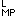
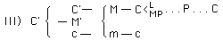
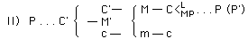

|
CHAPTER IV.
The Three Formulas of the Circuit .
. . . . . |
103 | |
|
*Natural, Money and Credit Economy . . .
. . . . . . . . |
--- | |
page 103
THE THREE FORMULAS OF THE CIRCUIT
The three formulas may be set down in the following manner, using Tc for "total circulation process":
If we combine all three forms, all premises of the process appear as its result, as a premise produced by it itself. Every element appears as a point of departure, of transit, and of return. The total process presents itself as the unity of the processes of production and circulation. The process of production becomes the mediator of the process of circulation and vice versa.
All three circuits have the following in common: The self-expansion of value as the determining purpose, as the compelling motive. In I this is expressed in its form. Formula II begins with P, the very process of creating surplus-value. In III the circuit begins with the self-expanded value and closes with new self-expanded value, even if the movement is repeated on the same scale.
As C--M means M--C for the buyer, and M--C means C--M for the seller, the circulation of capital presents only the ordinary metamorphosis of commodities, and the laws evolved with regard to it (Buch I, Kap. III, 2)[*] on the mass of money in circulation are valid here. However, if we do not cling to this formal aspect but rather consider the actual connection between the metamorphoses of the various individual capitals, in other words, if we study the connection between the circuits of individual capitals as partial movements of the process of
page 104
reproduction of the total social capital, then the mere change of form of money and commodities cannot explain the connection.
In a constantly revolving circle every point is simultaneously a point of departure and a point of return. If we interrupt the rotation, not every point of departure is a point of return. Thus we have seen that not only does every individual circuit presuppose (implicite) the others, but also that the repetition of the circuit in one form comprises the performance of the circuit in the other forms. The entire difference thus appears to be a merely formal one, or as a merely subjective distinction existing solely for the observer.
Since every one of these circuits is considered a special form of the movement in which various individual industrial capitals are engaged, this difference always exists only as an individual one. But in reality every individual industrial capital is present simultaneously in all three circuits. These three circuits, the forms of reproduction assumed by the three forms of capital, are made continuously side by side. For instance, one part of the capital-value, which now performs the function of commodity-capital, is transformed into money-capital, but at the same time another part leaves the process of production and enters the circulation as a new commodity-capital. The circuit form C' . . . C' is thus continuously described; and so are the other two forms. The reproduction of capital in each one of its forms and stages is just as continuous as the metamorphosis of these forms and the successive passage through the three stages. The entire circuit is thus really a unity of its three forms.
We assumed in our analysis that capital-value in its entire magnitude acts either as money-capital, productive capital or commodity-capital. For instance, we had those £422 first entirely as money-capital, then we transformed them wholly into productive capital, and finally into commodity-capital, into yarn of the value of £500 (containing £78 worth of surplus-value). Here the various stages are just so many interruptions. So long as, e.g., those £422 retain their money-form, that is to say, until the purchases M--C (L plus MP) are made, the entire capital exists and functions only as money-capital. As soon as it is transformed into productive capital, it performs neither the functions of money-capital nor of commodity-capital. Its entire process of circulation is interrupted, just as on the other hand its entire process of production is interrupted, as soon as it functions in one of its two circulation stages, either as M or as C'. Consequently, the circuit P . . . P would represent not only a
page 105
periodical renewal of the productive capital but also the interruption of its function, the process of production, up to the time when the process of circulation is completed. Instead of proceeding continuously, production would take place in jerks and would be renewed only in periods of accidental duration, according to whether the two stages of the process of circulation are got through with quickly or slowly. This would apply for instance to a Chinese artisan who works only for private customers and whose process of production ceases until he receives a new order.
This is indeed true of every single part of capital that is in motion, and all parts of capital go through this motion in succession. Suppose that the 10,000 lbs. of yarn are the weekly product of some spinner. These 10,000 lbs. of yarn leave the sphere of production entirely and enter the sphere of circulation; the capital-value contained in it must all be converted into money-capital, and so long as this value continues in the form of money-capital it cannot enter anew into the process of production. It must first go into circulation and be reconverted into the elements of productive capital, L plus MP. The circuit-describing process of capital means constant interruption, the leaving of one stage and the entering into the next, the discarding of one form and the assuming of another. Each one of these stages not only presupposes the next but also excludes it.
But continuity is the characteristic mark of capitalist production, necessitated by its technical basis, although not always absolutely attainable. Let us see then what happens in reality. While, e.g., the 10,000 lbs. of yarn appear in the market as commodity-capital and are transformed into money (regardless of whether it is a paying or purchasing medium or only money of account), new cotton, coal, etc., take the place of the yarn in the process of production, have therefore already been reconverted from the money-form and commodity-form into that of productive capital, and begin to function as such. At the same time that these 10,000 lbs. of yarn are being converted into money, the preceding 10,000 lbs. of yarn are going through the second stage of their circulation and are being reconverted from money into the elements of productive capital. All parts of capital successively describe circuits, are simultaneously at its different stages. The industrial capital, continuously progressing along its orbit, thus exists simultaneously at all its stages and in the diverse functional forms corresponding to these stages. That part of industrial capital which is converted for the first time from
page 106
commodity-capital into money begins the circuit C' . . . C', while industrial capital as a moving whole has already passed through that circuit. One hand advances money, the other receives it. The inauguration of the circuit M . . . M' at one place coincides with the return of the money at another place. The same is true of productive capital.
The actual circuit of industrial capital in its continuity is therefore not alone the unity of the processes of circulation and production but also the unity of all its three circuits. But it can be such a unity only if all the different parts of capital can go through the successive stages of the circuit, can pass from one phase, from one functional form to another, so that the industrial capital, being the whole of all these parts, exists simultaneously in its various phases and functions and thus describes all three circuits at the same time. The succession (das Nachcinander ) of these parts is here governed by their co-existence (das Nebeneinander ), that is to say, by the division of capital. In a ramified factory system the product is constantly in the various stages of its process of formation and constantly passes from one phase of production to another. As the individual industrial capital has a definite size which depends on the means of the capitalist and which has a definite minimum magnitude for every branch of industry, it follows that its division must proceed according to definite proportions. The magnitude of the available capital determines the dimensions of the process of production, and this again determines the dimensions of the commodity-capital and money-capital in so far as they perform their functions parallel with the process of production. However co-existence, by which continuity of production is determined, is only due to the movement of those parts of capital in which they successively pass through their different stages. Co-existence is itself merely the result of succession. If for instance C'--M' stagnates as far as one part is concerned, if the commodity cannot be sold, then the circuit of this part is interrupted and no replacement by its means of production takes place, the succeeding parts, which emerge from the process of production in the shape of C', find the change of their functions blocked by their predecessors. If this lasts for some time, production is restricted and the entire process brought to a halt. Every stagnation in succession carries disorder into co-existence, every stagnation in one stage causes more or less stagnation in the entire circuit of not only the stagnant part of the capital but also of the total individual capital.
page 107
The next form in which the process presents itself is that of a succession of phases, so that the transition of capital into a new phase is made necessary by its departure from another. Every separate circuit has therefore one of the functional forms of capital for its point of departure and point of return. On the other hand the aggregate process is in fact the unity of the three circuits, which are the different forms in which the continuity of the process expresses itself. The aggregate circuit presents itself to every functional form of capital as its specific circuit and every one of these circuits is a condition of the continuity of the total process. The cycle of each functional form is dependent upon the others. It is a necessary prerequisite of the aggregate process of production, especially for the social capital, that it is at the same time a process of reproduction and hence a circuit of each one of its elements. Various fractional parts of capital pass successively through the various stages and functional forms. Thanks to this every functional form passes simultaneously with the others through its own circuit, although always a different part of capital finds its expression in it. One part of capital, continually changing, continually reproduced, exists as a commodity-capital which is converted into money; another as money-capital which is converted into productive capital; and a third as productive capital which is transformed into commodity-capital. The continuous existence of all three forms is brought about by the circuit the aggregate capital describes in passing through precisely these three phases.
Capital as a whole, then, exists simultaneously, spatially side by side, in its different phases. But every part passes constantly and successively from one phase, from one functional form, into the next and thus functions in all of them in turn. Its forms are hence fluid and their simultaneousness is brought about by their succession. Every form follows another and precedes it, so that the return of one capital part to a certain form is necessitated by the return of the other part to some other form. Every part describes continuously its own cycle, but it is always another part of capital which exists in this form, and these special cycles form only simultaneous and successive elements of the aggregate process.
The continuity -- instead of the above-described interruption -- of the aggregate process is achieved only in the unity of the three circuits. The aggregate social capital always has this continuity and its process always exhibits the unity of the three circuits.
page 108
The continuity of the reproduction is at times more or less interrupted so far as individual capitals are concerned. In the first place the masses of value are frequently distributed at various periods in unequal portions over the various stages and functional forms. In the second place these portions may be differently distributed, according to the character of the commodity to be produced, hence according to the particular sphere of production in which the capital is invested. In the third place the continuity may be more or less broken in those branches of production which are dependent on the seasons, either on account of natural conditions (agriculture, herring catch, etc.) or on account of conventional circumstances, as for instance in so-called seasonal work. The process goes on most regularly and uniformly in the factories and mines. But this difference in the various branches of production does not cause any difference in the general forms of the circular process.
Capital as self-expanding value embraces not only class relations, a society of a definite character resting on the existence of labour in the form of wage-labour. It is a movement, a circuit-describing process going through various stages, which itself comprises three different forms of the circuit-describing process. Therefore it can be understood only as motion, not as a thing at rest. Those who regard the gaining by value of independent existence as a mere abstraction forget that the movement of industrial capital is this abstraction in actu. Value here passes through various forms, various movements in which it maintains itself and at the same time expands, augments. As we are here concerned primarily with the mere form of this movement, we shall not take into consideration the revolutions which capital-value may undergo during its circuit. But it is clear that in spite of all the revolutions of value, capitalist production exists and can endure only so long as capital-value is made to create surplus-value, that is, so long as it describes its circuit as a value that has gained independence, so long therefore as the revolutions in value are overcome and equilibrated in some way. The movements of capital appear as the action of some individual industrial capitalist who performs the functions of a buyer of commodities and labour, a seller of commodities, and an owner of productive capital, who therefore promotes the circuit by his activity. If social capital experiences a revolution in value, it may happen that the capital of the individual capitalist succumbs to it and fails, because it cannot adapt itself to the conditions of this movement of values. The
page 109
more acute and frequent such revolutions in value become, the more does the automatic movement of the now independent value operate with the elemental force of a natural process, against the foresight and calculation of the individual capitalist, the more does the course of normal production become subservient to abnormal speculation, and the greater is the danger that threatens the existence of the individual capitals. These periodical revolutions in value therefore corroborate what they are supposed to refute, namely, that value as capital acquires independent existence, which it maintains and accentuates through its movement.
This succession of the metamorphoses of capital in process includes continuous comparison of the change in the magnitude of value of the capital brought about in the circuit with the original value. If value's acquisition of independence of the value-creating power, labour-power, is inaugurated by the act M--L (purchase of labour-power) and is effected during the process of production as exploitation of labour-power, this acquisition of independence on the part of value does not re-appear in that circuit, in which money, commodities, and elements of production are merely alternating forms of capital-value in process, and the former magnitude of value is compared with capital's present changed magnitude of value.
"Value," argues Bailey against the acquisition of independence by value, an independence which is characteristic of the capitalist mode of production and which he treats as an illusion of certain economists; "value is a relation between contemporary commodities, because such only admit of being exchanged for each other."[*] This he says against the comparison of commodity-values of different epochs, a comparison which amounts only to comparing the expenditure of labour required in various periods for the production of the same sort of commodities, once the value of money has been fixed for every period. This comes from his general misunderstanding, for he thinks that exchange-value is equal to value, that the form of value is value itself; consequently commodity-values can no longer be compared, if they do not function actively as exchange-values and thus cannot actually be exchanged for one another. He has not the least inkling of the fact that value functions as capital-value or capital
page 110
only in so far as it remains identical with itself and is compared with itself in the different phases of its circuit, which are not at all "contemporary" but succeed one another.
In order to study the formula of the circuit in its purity it is not sufficient to postulate that commodities are sold at their value; it must also be assumed that this takes place with other things being equal. Take for instance the form P. . . P, disregarding all technical revolutions within the process of production by which the productive capital of a certain capitalist might be depreciated; disregarding furthermore all reactions which a change In the elements of value of the productive capital might have on the value of the existing commodity-capital, which might appreciate or depreciate if a stock of it is on hand. Suppose the 10,000 lbs. of yarn, C', have been sold at their value of £500; 8,440 lbs., equal to £422, replace the capital-value contained in C'. But if the value of cotton, coal, etc., has increased (we do not consider mere fluctuations in price), these £422 may not suffice for the full replacement of the elements of productive capital; additional money-capital is required, money-capital is tied up. The opposite takes place when those prices fall. Money capital is set free. The process takes a wholly normal course only when the value-relations remain constant; its course is practically normal so long as the disturbances during the repetitions of the circuit balance one another. But the greater these disturbances the greater the money-capital which the industrial capitalist must possess to tide over the period of readjustment; and as the scale of each individual process of production and with it the minimum size of the capital to be advanced increases in the process of capitalist production, we have here another circumstance to be added to those others which transform the function of the industrial capitalist more and more into a monopoly of big money-capitalists, who may operate singly or in association.
We remark incidentally that if a change in the value of the elements of production occurs a difference appears between the form M . . . M' on one side and of P . . . P and C' . . . C' on the other.
In M . . . M', the formula of newly invested capital, which first appears as money-capital, a fall in the value of the means of production, such as raw material, auxiliary material, etc., will permit of a smaller expenditure of money-capital than before this fall for the purpose of starting a business of a definite size, because the scale of the process of production (productive power develop-
page 111
ment remaining the same) depends on the mass and volume of the means of production which a given quantity of labour-power can cope with; but it does not depend on the value of these means of production nor on that of the labour-power (the latter value affects only the magnitude of self-expansion). Take the reverse case. If there is a rise in the value of the elements of production of the commodities which constitute the elements of the productive capital, then more money-capital is needed for the establishment of a business of definite proportions. In both cases it is only the amount of the money-capital required for new investment that is affected. In the former case money-capital becomes surplus, in the latter it is tied up, provided the accession of new individual industrial capital proceeds in the usual way in a given branch of production.
The circuits P . . . P and C' . . . C' present themselves as M . . . M' only to the extent that the movement of P and C' is at the same time accumulation, hence to the extent that additional m, money, is converted into money-capital. Apart from this they are affected differently from M . . . M' by a change in value of the elements of productive capital; here, too, we do not take into consideration the reaction of such changes in value on those constituent parts of capital which are engaged in the process of production. It is not the original expenditure which is directly affected here, but an industrial capital engaged in its process of reproduction and not in its first circuit; i.e., C' . . .C<,[¥] the reconversion of commodity-capital into its elements of production, so far as they are composed of commodities. When values (or prices) fall three cases are possible: The process of reproduction is continued on the same scale; in that event a part of the money-capital existing hitherto is set free and money-capital is accumulated, although no real accumulation (production on an extended scale) or transformation of m (surplus-value) into an accumulation-fund initiating and accompanying such accumulation has previously taken place. Or the process of reproduction is carried on on a more extensive scale than ordinarily would have been the case, provided the technical proportions admit it. Or, finally, a larger stock of raw materials, etc., is laid in.
The opposite occurs if the value of the elements of replacement of a commodity-capital increases. In that case reproduction no longer takes place on its normal scale (e.g., the working-day gets shorter); or additional money-capital must be employed in
page 112
order to maintain the old volume of work (money-capital is tied up); or the money-fund for accumulation, when one exists, is employed entirely or partially for the operation of the process of reproduction on its old scale instead of for the enlargement of this process. This is also tying up money-capital, except that here the additional money-capital does not come from the outside, from the money-market, but from the means of the industrial capitalist himself.
However, there may be modifying circumstances in P. . . P and C' . . . C'. If our spinning-mill proprietor for example has a large stock of cotton (a large proportion of his productive capital in the form of a stock of cotton), a part of his productive capital is depreciated by a fall in the prices of cotton; but if on the contrary these prices rise, this part of his productive capital appreciates. On the other hand, if he has tied up huge quantities in the form of commodity-capital, for instance of cotton yarn, a part of his commodity-capital, hence of his circuit-describing capital in general, is depreciated by a fall of cotton, or appreciated by a rise in its prices. Finally take the process C'--M--C<. If C'--M, the realisation of the commodity-capital, has taken place before a change in the value of the elements of C, then capital is affected only in the way indicated in the first case, namely in the second act of circulation, M--C
In the circulation section M--C<, in the epoch of the already developed and hence prevailing capitalist mode of production, a large portion of the commodities composing MP, the means of production, is itself functioning as the commodity-capital of someone else. From the standpoint of the seller, there
page 113
fore, C'--M, the transformation of commodity-capital into money-capital takes place. But this is not an absolute rule. On the contrary Within its process of circulation, in which industrial capital functions either as money or as commodities, the circuit of industrial capital, whether as money-capital or as commodity-capital, crosses the commodity circulation of the most diverse modes of social production, so far as they produce commodities. No matter whether commodities are the output of production based on slavery, of peasants (Chinese, Indian ryots), of communes (Dutch East Indies), of state enterprise (such as existed in former epochs of Russian history on the basis of serfdom) or of half-savage hunting tribes, etc. -- as commodities and money they come face to face with the money and commodities in which the industrial capital presents itself and enter as much into its circuit as into that of the surplus-value borne in the commodity-capital, provided the surplus-value is spent as revenue; hence they enter into both branches of circulation of commodity-capital. The character of the process of production from which they originate is immaterial. They function as commodities in the market, and as commodities they enter into the circuit of industrial capital as well as into the circulation of the surplus-value incorporated in it. It is therefore the universal character of the origin of the commodities, the existence of the market as world-market, which distinguishes the process of circulation of industrial capital. What is true of the commodities of others is also true of the money of others. Just as commodity-capital faces money only as commodities, so this money functions vis-à-vis commodity-capital only as money. Money here performs the functions of world-money.
However two points must be noted here.
First: As soon as act M--MP is completed, the commodities (MP) cease to be such and become one of the modes of existence of industrial capital in its functional form of P, productive capital. Thereby however their origin is obliterated. They exist henceforth only as forms of existence of industrial capital, are embodied in it. However it still remains true that to replace them they must be reproduced, and to this extent the capitalist mode of production is conditional on modes of production lying outside of its own stage of development. But it is the tendency of the capitalist mode of production to transform all production as much as possible into commodity production. The mainspring by which this is accomplished is precisely the involvement of all production into the capitalist circulation process.
page 114
And developed commodity production itself is capitalist commodity production. The intervention of industrial capital promotes this transformation everywhere, but with it also the transformation of all direct producers into wage-labourers.
Secondly: The commodities entering into the process of circulation of industrial capital (including the requisite means of subsistence into which variable capital, after being paid to the labourers, is transformed for the purpose of reproducing their labour-power), regardless of their origin and of the social form of the productive process by which they were brought into existence, come face to face with industrial capital itself already in the form of commodity-capital, in the form of commodity-dealer's or merchant's capital. And merchant's capital, by its very nature, comprises commodities of all modes of production. The capitalist mode of production presupposes not only large-scale production but also, and necessarily so, sales on a large scale, hence sale to the merchant, not to the individual consumer. If this consumer is himself a productive consumer, hence an industrial capitalist, i.e., if the industrial capital of one branch of production supplies some other branch of industry with means of production, direct sale by one industrial capitalist to many others takes place (in the form of orders, etc.). To this extent every industrial capitalist is a direct seller and his own merchant, which by the way he also is when he sells to a merchant. Trading in commodities as the function of merchant's capital is a premise of capitalist production and develops more and more in the course of development of such production. Therefore we occasionally take its existence for granted to illustrate particular aspects of the process of capitalist circulation; but in the general analysis of this process we assume direct sale, without the intervention of a merchant, because this intervention obscures various facets of the movement.
Cf. Sismondi, who presents the matter somewhat naïvely:
"Commerce employs considerable capital, which at first sight does not seem to be a part of that capital whose movement we have described. The value of the cloth accumulated in the stores of the cloth-merchant seems at first to be entirely foreign to that part of the annual production which the rich gives to the poor as wages in order to make him work. However this capital has simply replaced the other of which we have spoken. For the purpose of clearly understanding the progress of wealth, we have begun with its creation and followed it to its consumption. Then the capital employed in cloth manufacturing, for instance,
page 115
always seemed the same to us; and when it was exchanged for the revenue of the consumer, it was divided into only two parts, one of them serving as revenue of the manufacturer in the form of the profit, the other serving as revenue of the labourers in the form of wages for the time they were manufacturing new cloth.
"But it was soon found that it would be to the advantage of all if the different parts of this capital were to replace one another and that, if 100,000 écus were sufficient for the entire circulation between the manufacturer and the consumer, they should be divided equally between the manufacturer, the whole-sale merchant, and the retail merchant. The first then did with only one-third of this capital the same work as he had done with the entire capital, because as soon as his work of manufacturing was completed he found that a merchant would rather buy from him than a consumer would. On the other hand the capital of the wholesaler was much sooner replaced by that of the retailer. . . . The difference between the sums advanced for wages and the purchase price paid by the ultimate consumer was considered the profit of those capitals. It was divided between the manufacturer, the merchant, and the retailer, from the moment that they had divided their functions among themselves, and the work performed was the same, although it had required three persons and three parts of capital instead of one." (Nouveaux Principes, I, pages 139 and 140.)
"All of them [the merchants] contributed indirectly to the production; for having consumption for its object, production cannot be regarded as completed until the thing produced is placed within the reach of the consumer." (Ibid., p. 137.)
In the discussion of the general forms of the circuit and in the entire second book in general, we take money to mean metallic money, with the exception of symbolic money, mere tokens of value, which are designed for specific use in certain states, and of credit-money, which is not yet developed. In the first place, this is the historical order; credit-money plays only a very minor role, or none at all, during the first epoch of capitalist production. In the second place, the necessity of this order is demonstrated theoretically by the fact that everything of a critical nature which Tooke and others hitherto expounded in regard to the circulation of credit-money compelled them to hark back again and again to the question of what would be the aspect of the matter if nothing but metal-money were in circulation. But it must not be forgotten that metal-money may serve as a
page 116
purchasing medium and also as a paying medium. For the sake of simplicity, we consider it in this second book generally only in its first functional form.
The process of circulation of industrial capital, which is only a part of its individual circuit, is determined by the general laws previously set forth (Buch I, Kap. III),[*] in so far as it is only a series of acts within the general circulation of commodities. The greater the velocity of the currency of money, the more rapidly therefore every individual capital passes through the series of its commodity or money metamorphoses, the more numerous are the industrial capitals (or individual capitals in the form of commodity-capitals) started circulating successively by a given mass of money, for example £500. The more the money functions as a paying medium, the more therefore -- for instance in the replacement of some commodity-capital by its means of production -- nothing but balances have to be squared, and the shorter the periods of time when payments fall due, as for instance in paying wages, the less money a given mass of capital-value therefore requires for its circulation. On the other hand, assuming that the velocity of the circulation and all other conditions remain the same, the amount of money required to circulate as money-capital is determined by the sum of the prices of the commodities (price multiplied by the volume of commodities), or, if the quantity and value of the commodities are fixed, by the value of the money itself.
But the laws of the general circulation of commodities are valid only when capital's circulation process consists of a series of simple acts of circulation; they do not apply when the latter constitute functionally determined sections of the circuit of individual industrial capitals.
In order to make this plain, it is best to study the process of circulation in its uninterrupted interconnection, such as it appears in the following two forms: [¥]

page 117
As a series of acts of circulation in general, the process of circulation (whether in the form of C--M--C or of M--C--M) represents merely the two antithetical series of commodity metamorphoses, every single one of which in its turn implies an opposite metamorphosis on the part of the alien commodity or alien money confronting the commodity.
C--M on the part of the owner of a commodity means M--C on the part of its buyer; the first metamorphosis of the commodity in C--M is the second metamorphosis of the commodity appearing in the form of M; the opposite applies to M--C. What has been shown concerning the intertwining of the metamorphosis of a certain commodity in one stage with that of another in another stage applies to the circulation of capital so far as the capitalist functions as a buyer and seller of commodities, and his capital on that account functions in the form of money opposed to the commodities of another, or in the form of commodities opposed to the money of another. But this intertwining is not to be identified with the intertwining of the metamorphoses of capitals.
In the first place M--C (MP), as we have seen, may represent an intermingling of the metamorphoses of different individual capitals. For instance the cornmodity-capital of the spinning-mill owner, yarn, is partly replaced by coal. One part of his capital exists in the form of money and is converted into the form of commodities, while the capital of the capitalist producer of coal is in the form of commodities and is therefore converted into the form of money; the same act of circulation represents in this case opposite metamorphoses of two industrial capitals (in different branches of production), hence an intertwining of the series of metamorphoses of these capitals. But as we have seen the MP into which M is transformed need not be commodity-capital in the categorical sense, i.e., need not be a functional form of industrial capital, need not be produced by a capitalist. It is always M--C on one side and C--M on the other, but not always an intermingling of metamorphoses of capitals. Furthermore M--L, the purchase of labour-power, is never an intermingling of metamorphoses of capitals, for labour-power, though the commodity of the labourer, does not become capital until it is sold to the capitalist. On the other hand in the process C--M', it is not necessary that M' should represent converted commodity-capital; it may be the realisation in money of the commodity labour-power (wages), or of the product of some in dependent labourer, slave, serf, or community.
page 118
In the second place however it is not at all required for the discharge of the functionally determined role played by every metamorphosis occurring within the process of circulation of some individual capital that this metamorphosis should represent the corresponding opposite metamorphosis in the circuit of the other capital, provided we assume that the entire production of the world-market is carried on capitalistically. For instance in the circuit P. . . P, the M which converts C' into money may be to the buyer only the realisation in money of his surplus-value (if the commodity is an article of consumption); or, in M'--C< (where therefore already accumulated capital enters) M' may, as far as the vendor of MP is concerned, enter into the circulation of his capital only to replace his advanced capital or it may not re-enter at all by being diverted into revenue expenditure.
Therefore the manner in which the various component parts of the aggregate social capital, of which the individual capitals are but constituents functioning independently, mutually replace one another in the process of circulation -- in regard to capital as well as surplus-value -- is not ascertained from the simple intertwinings of the metamorphoses in the circulation of commodities -- intertwinings which the acts of capital circulation have in common with all other circulation of commodities. That requires a different method of investigation. Hitherto one has been satisfied with uttering phrases which upon closer analysis are found to contain nothing but indefinite ideas borrowed from the intertwining of metamorphoses common to all commodity circulation.
One of the most obvious peculiarities of the movement in circuits of industrial capital, and therefore also of capitalist production, is the fact that on the one hand the component elements of productive capital are derived from the commodity-market and must be continually renewed out of it, bought as commodities; and that on the other hand the product of the labour-process emerges from it as a commodity and must be continually sold anew as a commodity. Compare for instance a modern farmer of the Scotch lowlands with an old-fashioned small peasant on the Continent. The former sells his entire product and has therefore to replace all its elements, even his seed, in the market; the latter consumes the greater part of his product di-
page 119
rectly, buys and sells as little as possible, fashions tools, makes clothing, etc., so far as possible himself. Natural economy, money-economy, and credit-economy have therefore been placed in opposition to one another as being the three characteristic economic forms of movement in social production.
In the first place these three forms do not represent equivalent phases of development. The so-called credit-economy is merely a form of the money-economy, since both terms express functions or modes of exchange among the producers themselves. In developed capitalist production, the money-economy appears only as the basis of the credit-economy. The money-economy and credit-economy thus correspond only to different stages in the development of capitalist production, but they are by no means independent forms of exchange vis-à-vis natural economy. With the same justification one might contrapose as equivalents the very different forms of natural economy to those two economies.
In the second place, since it is not the economy, i.e., the process of production itself that is emphasised as the distinguishing mark of the two categories, money-economy and credit-economy, but rather the mode of exchange -- corresponding to that economy -- between the various agents of production, or producers, the same should apply to the first category. Hence exchange economy instead of natural economy. A completely isolated natural economy, such as the Inca state of Peru, would not come under any of these categories.
In the third place the money-economy is common to all commodity production and the product appears as a commodity in the most varied organisms of social production. Consequently what characterises capitalist production would then be only the extent to which the product is created as an article of commerce, as a commodity, and hence the extent also to which its own constituent elements must enter again as articles of commerce, as commodities, into the economy from which it emerges.
As a matter of fact capitalist production is commodity production as the general form of production. But it is so and becomes so more and more in the course of its development only because labour itself appears here as a commodity, because the labourer sells his labour, that is, the function of his labour-power, and our assumption is that he sells it at its value, determined by its cost of reproduction. To the extent that labour becomes wage-labour, the producer becomes an industrial capitalist. For this
page 120
reason capitalist production (and hence also commodity production) does not reach its full scope until the direct agricultural producer becomes a wage-labourer. In the relation of capitalist and wage-labourer, the money-relation, the relation between the buyer and the seller, becomes a relation inherent in production. But this relation has its foundation in the social character of production, not in the mode of exchange. The latter conversely emanates from the former. It is, however, quite in keeping with the bourgeois horizon, everyone being engrossed in the transaction of shady business, not to see in the character of the mode of production the basis of the mode of exchange corresponding to it but vice versa.[7]
The capitalist throws less value in the form of money into the circulation than he draws out of it, because he throws into it more value in the form of commodities than he withdrew from it in the form of commodities. Since he functions simply as a personification of capital, as an industrial capitalist, his supply of commodity-value is always greater than his demand for it. If his supply and demand in this respect covered each other it would mean that his capital had not produced any surplus-value, that it had not functioned as productive capital, that the productive capital had been converted into commodity-capital not big with surplus-value; that it had not drawn any surplus-value in commodity-form out of labour-power during the process of production, had not functioned at all as capital. The capitalist must indeed "sell dearer than he has bought," but he succeeds in doing so only because the capitalist process of production enables him to transform the cheaper commodity he bought -- cheaper because it contains less value -- into a commodity of greater value, hence a dearer one. He sells dearer, not because he sells above the value of his commodity, but because his commodity contains value in excess of that contained in the ingredients of its production.
The rate at which the capitalist makes the value of his capital expand is the greater, the greater the difference between his supply and his demand, i.e., the greater the excess of the commodity-value he supplies over the commodity-value he demands
page 121
His aim is not to equalise his supply and demand, but to make the inequality between them, the excess of his supply over his demand, as great as possible.
What is true of the individual capitalist applies to the capitalist class.
In so far as the capitalist merely personifies industrial capital, his own demand is confined to means of production and labour-power. In point of value, his demand for MP is smaller than his advanced capital; he buys means of production of a smaller value than that of his capital, and therefore of a still smaller value than that of the commodity-capital which he supplies.
As regards his demand for labour-power, it is determined in point of value by the relation of his variable capital to his total capital, hence equals v:C. In capitalist production this demand therefore grows relatively smaller than his demand for means of production. His purchases of MP steadily rise above his purchases of L.
Since the labourer generally converts his wages into means of subsistence, and for the overwhelmingly larger part into absolute necessities, the demand of the capitalist for labour-power is indirectly also a demand for the articles of consumption essential to the working-class. But this demand is equal to v and not one iota greater (if the labourer saves a part of his wages -- we necessarily discard here all credit relations -- he converts part of his wages into a hoard and to that extent does not act as a bidder, a purchaser). The upper limit of a capitalist's demand is C, equal to c+v, but his supply is c+v+s. Consequently if the composition of his commodity-capital is 80c + 20v + 20s, his demand is equal to 80c + 20v, hence, considered from the angle of the value it contains, one-fifth smaller than his supply. The greater the percentage of the mass of surplus-value produced by him (his rate of profit) the smaller becomes his demand in relation to his supply. Although with the further development of production the demand of the capitalist for labour-power, and thus indirectly for necessary means of subsistence, steadily decreases compared with his demand for means of production, it must not be forgotten on the other hand that his demand for MP is always smaller than his capital. His demand for means of production must therefore always be smaller in value than the commodity-product of the capitalist who, working with a capital of equal value and under equal conditions, furnishes him with those means of production. That many capitalists and not only one do the furnishing does not alter the case. Take it that
page 122
his capital is £1,000, and its constant part £800; then his demand on all these capitalists is equal to £800. Together they supply means of production worth £1,200 for each £1,000 (regardless of what share in each £1,000 may fall to each one of them and of the fraction of his total capital which the share of each may represent), assuming that the rate of profit is the same. Consequently his demand covers only two-thirds of their supply, while his own total demand amounts to only four-fifths of his own supply, measured in value.
It still remains for us, incidentally, to investigate the problem of turnover. Let the total capital of the capitalist be £5,000, of which £4,000 is fixed and £1,000 circulating capital; let these £1,000 be composed of 800c plus 200s, as assumed above. His circulating capital must be turned over five times a year for his total capital to turn over once. His commodity-product is then equal to £6,000, i.e., £1,000 more than his advanced capital, which results in the same ratio of surplus-value as above:
This turnover therefore does not change anything in the ratio of his total demand to his total supply. The former remains one-fifth smaller than the latter.
Suppose his fixed capital has to be renewed in 10 years. So the capitalist pays every year one-tenth, or £400, into a sinking fund and thus has only a value of £3,600 of fixed capital left plus £400 in money. If the repairs are necessary and do not exceed the average, they represent nothing but capital invested later. We may look at the matter the same as if he had allowed for the cost of repairs beforehand, when calculating the value of his investment capital, so far as this enters into the annual commodity-product, so that it is included in that one-tenth sinking fund payment. (If his need of repairs is below average he is so much money to the good, and the reverse if above. But this evens out for the entire class of capitalists engaged in the same branch of industry.) At any rate, although his annual demand still remains £5,000, equal to the original capital-value he advanced (assuming his total capital is turned over once a year), this demand increases with regard to the circulating part of the capital, while it steadily decreases with regard to its fixed part.
We now come to reproduction. Let us assume that the capitalist consumes the entire surplus-value m and reconverts only
page 123
capital C of the original magnitude into productive capital. Then the demand of the capitalist is equal in value to his supply; but this does not refer to the movement of his capital. As a capitalist he exercises a demand for only four-fifths of his supply (in terms of value). He consumes one-fifth as a non-capitalist, not in his function as capitalist but for his private requirements or pleasures.
His calculation, expressed in percentages, is then as follows: I. M--C . . . P . . . C'--M'
II. P . . . Tc . . . P
III. Tc . . . P(C').
* English edition: Ch. III, 2. --Ed.
* See: Bailey, Samuel, A Critical Dissertation on the Nature, Measures, and Causes of Value; Chiefly in Reference to the Writings of Mr. Ricardo and his Followers By the Author of Essays on the Formation and Publication of Opinions, London, 1825, p. 72. --Ed.
[¥] [Transcriber's Note for those without a graphic browser: If you have, for some reason, skipped Chapters I, II, and III, unless otherwise indicated, C< has an L placed high, <"--", and an MP placed low, <"_", indicating the two types of commodities, labour-power and means of production, that money must purchase and bring together in order to function as capital. -- DJR]

* English edition: Ch. III. --Ed.
[¥][Transcriber's Note for those without a graphic browser: I cannot describe the symbolic notation presented here. Once again you'll have to look at yet another un-aesthetic rendering in the source code for this page.) -- DJR]
[7] End of Manuscript V. What follows, to the end of the chapter, is a note contained in a notebook of 1877 or 1878 amid extracts from various books. --F.E.
Demand as capitalist . . . . . . . . 100, supply 120
Demand as man about town . . . . 20, supply --
__________________________________________
Total demand . . . . . . . . . . . . . 120, supply 120
This assumption is tantamount to assuming that capitalist production does not exist, and therefore that the industrial capitalist himself does not exist. For capitalism is abolished root and branch by the bare assumption that it is personal consumption and not enrichment that works as the compelling motive.
But such an assumption is impossible also technically. The capitalist must not only form a reserve-capital to cushion price fluctuations and enable him to wait for favourable buying and selling conditions. He must accumulate capital in order to extend his production and build technical progress into his productive organism.
In order to accumulate capital he must first withdraw in money-form from circulation a part of the surplus-value which he obtained from that circulation, and must hoard it until it has increased sufiiciently for the extension of his old business or the opening of a side-line. So long as the formation of the hoard continues, it does not increase the demand of the capitalist. The money is immobilised. It does not withdraw from the commodity-market any equivalent in commodities for the money-equivalent withdrawn from it for commodities supplied.
Credit is not considered here. And credit includes for example deposits by the capitalist of accumulating money in a bank on current account paying interest.